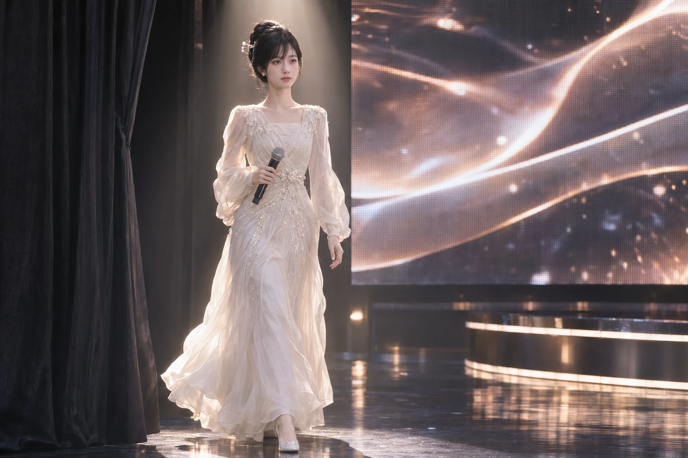
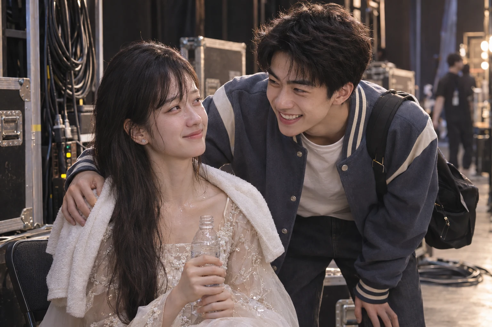
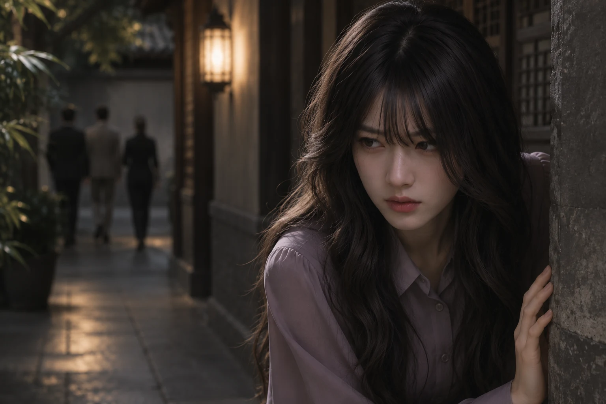

ตอนที่ 23
มือมืด
แสงไฟในสตูดิโอดับลงช้า ๆ จังหวะดนตรีอินโทรที่ดังแผ่วเบา บนจอ LED ขนาดยักษ์ปรากฏชื่อรายการแข่งขันร้องเพลง The People’s Voice ก่อนตัวอักษรสีทองจะเลือนหายไปพร้อมกับลำแสงสปอตไลต์ที่พุ่งตรงสู่กลางเวที
เงาร่างหนึ่งก้าวออกมาจากม่านดำอย่างสง่างาม ซ่งอวิ๋นกระชับไมค์ไร้สายไว้มั่น รอยยิ้มประจำตัวประดับมุมปาก เธอไม่ได้มาในฐานะผู้เข้าแข่งขัน หากแต่เป็นแขกรับเชิญพิเศษผู้ได้รับเกียรติให้แสดงเปิดรายการ
หญิงสาวสวมเดรสยาวสีขาวมุก ผ้าเนื้อบางพลิ้วไหวตามจังหวะก้าวเดิน เมื่อแสงไฟตกกระทบต่างหูเพชรเม็ดเล็กก็สะท้อนประกายระยิบระยับ

ทันทีที่เธอปรากฏตัว เสียงฮือฮาจากผู้ชมในห้องส่งก็ดังขึ้นทั่วทั้งสตูดิโอ บางคนถึงกับลุกขึ้นยืนโดยไม่รู้ตัว เพราะพวกเขายังจำเด็กน้อยมหัศจรรย์เมื่อหลายปีก่อนได้ ดวงตาจึงเต็มไปด้วยความคาดหวัง
[!]
[!!]
[บ้าน่า น้องอวิ๋นโตแล้วสวยขนาดนี้เลยเหรอ ตอนนั้นยังตัวเล็กตัวน้อยอยู่เลย รู้สึกแก่ขึ้นมาเลยแฮะ]
[สมเป็นคุณหนูจากตระกูลใหญ่ ท่วงท่าการเดินการยืน ดูก็รู้แล้วว่าได้รับการอบรมสั่งสอนมาดี]
[เสียดายที่น้องอวิ๋นปิดบัญชีโซเชียลเป็นส่วนตัว พวกเราไม่มีช่องทางให้ติดตามน้องเลย เผลอแป๊บเดียวน้องก็โตขนาดนี้แล้ว]
[ได้ยินว่าช่วงนี้ตระกูลซ่งกำลังเจอกับพายุลูกใหญ่ นายท่านซ่งพาลูกสาวนอกสมรสกลับบ้าน พ่อแม่ของเธอหย่ากัน เข้มแข็งมากที่ยังยืนบนเวทีได้แบบมั่นใจ]
[เมนต์บน อย่าทำให้บรรยากาศเสียสิ บางทีน้องอวิ๋นก็อาจจะไม่ได้อยากให้ใครเอ่ยถึงเรื่องนี้ก็ได้นี่นา]
ซ่งอวิ๋นหยุดยืนกลางเวที เธอเงยหน้าขึ้นช้า ๆ ดวงตาคู่งามสงบนิ่ง แต่แฝงพลังบางอย่างที่ทำให้ทั้งห้องส่งเงียบกริบในชั่วพริบตา
โน้ตแรกดังขึ้น เสียงของเธอใสกระจ่างและนุ่มลึกในเวลาเดียวกัน ราวกับหยาดฝนที่ตกลงบนผิวน้ำยามค่ำคืน ทุกถ้อยคำถูกขับร้องอย่างประณีตจนผู้ฟังสัมผัสได้ถึงอารมณ์ที่ซ่อนอยู่เบื้องหลัง เสียงสูงของเธอไม่แหลมบาดหู แต่พุ่งขึ้นอย่างสง่างาม ส่วนเสียงต่ำกลับอบอุ่นจนเหมือนโอบล้อมผู้ชมทั้งสตูดิโอไว้
กล้องถ่ายทอดสดสลับไปยังใบหน้าของผู้เข้าแข่งขันที่นั่งรอหลังเวที หลายคนมองเธอด้วยแววตาตื่นตะลึง ราวกับลืมไปแล้วว่าตนกำลังจะแข่งขันในอีกไม่กี่นาที
“...” ซ่งหว่านเผลอกัดริมฝีปากตัวเอง อีกฝ่ายสมบูรณ์แบบเกินไป ทั้งที่เป็นลูกซ่งเหวินเหมือนกัน แต่ทำไมอีกฝ่ายเหมือนหงส์ฟ้า ในขณะเธอต้องอยู่ในมุมมืด ๆ ไม่ต่างจากแกะดำที่สังคมไม่ยอมรับ
เมื่อเพลงเข้าสู่ท่อนฮุก แสงไฟสีขาวนวลค่อย ๆ โปรยลงมาจากด้านบนเหมือนหิมะแรกของฤดูหนาว ซ่งอวิ๋นหลับตาเล็กน้อย ปล่อยเสียงสุดท้ายทอดยาวกังวานไปทั่วสตูดิโอ แม้ดนตรีจะหยุดลงแล้ว ความเงียบก็ยังคงอยู่ชั่วขณะหนึ่ง ก่อนเสียงปรบมือจะระเบิดขึ้น
ผู้ชมลุกขึ้นยืนพร้อมกัน เสียงเชียร์ดังสนั่น ยอมรับในฝีมือของเธอ ตำนานก็ยังเป็นตำนานเสมอ
ซ่งอวิ๋นโค้งคำนับอย่างนอบน้อมและอ่อนช้อย มุมปากยกยิ้มเพียงเล็กน้อย ก่อนจะหันกายเดินกลับสู่หลังเวทีท่ามกลางแสงไฟที่ค่อย ๆ ดับลง
และในวินาทีนั้น ทุกคนต่างเข้าใจตรงกันว่า เพียงแค่การปรากฏตัวบนเวทีเปิดรายการ The People’s Voice ในครั้งนี้ ก็เพียงพอจะทำให้ถูกจดจำไปอีกนานแสนนาน
[ให้ตายสิ ตอนฟังน้องอวิ๋นร้องเพลง เหมือนฉันฝันว่าลอยอยู่ในก้อนเมฆนุ่ม ๆ พอเพลงจบลงก็ตื่นจากฝัน ยังร้องเพลงเพราะไม่เปลี่ยนเลย]
[นี่แหละที่เค้าว่าเสียงใสเหมือนแก้ว เข้าถึงอารมณ์ผู้ฟัง ฉันเสียดายจริง ๆ ถ้าน้องอวิ๋นจะละทิ้ง ไม่ต่อยอดพรสวรรค์ของตัวเอง]
[เมื่อกี้ฉันเห็นน้องชายแห่งชาตินั่งรวมอยู่กับกลุ่มผู้ชม มาเชียร์พี่สาวของเขาสินะ น่ารักจริง ๆ]
[น้องอวิ๋นไม่สนใจเดบิวต์เป็นนักร้องจริง ๆ เหรอ]
[ฉันรู้สึกว่าตอนน้องอวิ๋นร้องเพลง หูของฉันกำลังเต้นระบำ มีความสุขจริง ๆ]
[ก็ไม่เห็นเพราะขนาดนั้นนะ มาจากตระกูลใหญ่หน่อยก็รีบเลียแข้งเลียขาเชียว]
[ฉันเข้าใจแล้วว่าทำไมน้องอวิ๋นถึงไม่เข้าวงการ ดูสิ ขนาดยังไม่ทันเดบิวต์ก็มีแอนตี้เสียแล้ว]
ซ่งอวิ๋นหอบหายใจ ท่าทางมั่นใจที่เธอแสดงออกบนเวทีถูกแทนที่ด้วยความโล่งอก เธอไม่รู้ตัวเลยว่าตนเองทำพลาดบ้างหรือไม่ แต่ดูจากเสียงปรบมือของผู้ชมแล้ว ก็คงไม่ได้ทำให้พวกเขาผิดหวัง
หญิงสาวปาดเหงื่อ ตั้งใจจะไปหาบอดี้การ์ดสาวเพื่อติดตามอาการพี่ช่างแต่งหน้า แต่เสียงเรียกสดใสก็ดังจากทางด้านหลัง
“พี่สาม สุดยอดไปเลยครับ” ซ่งจื้อวิ่งมาหาพี่สาวด้านหลังเวที ใบหน้าหนุ่มน้อยเต็มไปด้วยรอยยิ้มสดใส พี่สาวของเขาเปล่งประกายเสมอ ต่อให้ไม่อยู่บนเวที เธอก็ยังโดดเด่น
“เจ้าสี่มาตั้งแต่เมื่อไหร่ ไม่เห็นบอกก่อนเลยว่าจะมา นายติดถ่ายงานไม่ใช่เหรอ โดดงานมาหาพี่หรือเปล่าเนี่ย” ซ่งอวิ๋นดีใจที่น้องชายมาหา เธอจึงเผลอรัวคำถามแบบไม่เว้นจังหวะหายใจ
“ไม่ใช่นะครับ ผมถ่ายแบบไม่พัก ก็เลยได้มาเป็นกำลังใจให้พี่สาม พี่สุดยอดมากจริง ๆ คนดูในห้องส่งตื่นเต้นกันมากเลย ถ้าพี่เป็นนักร้องต้องดังระเบิดแน่ ๆ” เขากอดไหล่พี่สาวอย่างสนิทสนม ทีมงานหลายคนที่เดินผ่านไปผ่านมาต่างอมยิ้มกับความน่ารักของพี่น้อง
“พี่ไม่ได้พลาดตรงไหนใช่ไหม ตอนนั้นเหมือนสมองพี่หยุดทำงานไปเลย” ซ่งอวิ๋นนึกถึงตอนนี้มองลงไปด้านล่างเวที ความรู้สึกช่างแตกต่างจากตอนเด็กลิบลับ ตอนนั้นเธอไม่มีความกลัว กังวล หรือประหม่าเลยสักนิด นั่นอาจเป็นข้อดีของการเป็นเด็ก
“ไม่พลาดเลยครับ สมบูรณ์แบบมาก ๆ อีกต่างหาก” ซ่งจื้อยืนยันหนักแน่น

“คุณหนู..” บอดี้การ์ดสาวเข้ามาหาเธออย่างรีบร้อน
“เกิดอะไรขึ้นคะ” ซ่งอวิ๋นหน้าเสีย หรือการคาดเดาของเธอจะเกิดขึ้นจริง ๆ
“พอคุณหนูขึ้นเวทีไป ช่างแต่งหน้าก็ปวดท้องและท้องเสียอย่างรุนแรงเลยค่ะ ตอนนี้พวกเราพาส่งโรงพยาบาลแล้ว”
ซ่งอวิ๋นยกมือลูบอกตัวเองเบา ๆ รู้สึกผิดที่อาจเป็นต้นเหตุให้ผู้บริสุทธิ์เดือดร้อน “ส่งน้ำกับขนมไปตรวจเรียบร้อยแล้วใช่ไหมคะ”
“ตรวจแล้วค่ะคุณหนู รอผลอีกสองชั่วโมง”
“ได้ผลยังไงพวกเราค่อยไปคุยกับผู้กำกับนะคะ แล้วพี่เจอทีมงานคนนั้นหรือเปล่าคะ”
“ไม่เจอเลยค่ะ”
“นี่มัน.. เกิดอะไรขึ้นเหรอครับพี่สาม” ซ่งจื้อตามไม่ทัน น้ำกับขนมอะไรกัน
“พอดีมีเรื่องนิดหน่อย เดี๋ยวพี่เล่าให้ฟัง นายกลับไปที่ห้องแต่งตัวกับพี่ก่อนเถอะ” ซ่งอวิ๋นดึงแขนน้องชายแล้วตรงดิ่งกลับห้องแต่งตัว
คล้อยหลังคนทั้งสาม ซ่งหว่านเดินออกมาจากมุมอับสายตาที่ทุกคนมองไม่เห็น หัวคิ้วขมวดมุ่น “เกิดอะไรขึ้น?”

เธอเพิ่งกลับมาห้องน้ำ เห็นสองพี่น้องคุยกันอย่างสนิทสนม จึงหลบมุมและแอบฟัง ทำไมช่างแต่งหน้าถึงท้องร่วง อาหารกับขนมอะไร เธอยังไม่ทันลงมืออะไรรุนแรงเลย มีมือมืดช่วยเธอจัดการขวากหนามงั้นเหรอ
หญิงสาวคิดอย่างสับสน แต่ไม่นานก็ต้องรีบกลับไปที่ห้องพักด้านหลังเวที เพราะวันนี้วงของเธอกับพี่รองต้องแข่งขันเช่นเดียวกัน
รายการ The People’s Voice ยังคงถ่ายทอดสดต่อไป แม้ว่าเบื้องหลังจะวุ่นวายและต้องแก้ไขปัญหาเฉพาะหน้ามากมายขนาดไหน แต่ด้วยฝีมือของโปรดิวเซอร์และผู้กำกับหู พวกเขาก็ไม่ปล่อยให้เกิดข้อผิดพลาดขึ้นเลยแม้แต่น้อย
โดยทางรายการมีเวทีอยู่ถึงห้าเวที แบ่งเป็นเวทีสำหรับผู้เข้าแข่งขันสี่เวที เพื่อให้ง่ายในการเซตฉาก และสวิตช์ภาพออกอากาศ ส่วนเวทีใหญ่คือเวทีที่ซ่งอวิ๋นขึ้นไปแสดงเมื่อครู่ แต่ละทีมจะได้แอร์ไทม์ในการแสดงให้จับใจผู้ชมเพียงสามสิบวินาทีเท่านั้น
ผู้ชมถ่ายทอดสดสามารถมีส่วนร่วมในการโหวตได้ รายการสร้างเว็บไซต์สำหรับโหวตคะแนนขึ้นมาโดยเฉพาะ มั่นใจได้ว่าจะไม่มีการโกงหรือปั่นโหวตใด ๆ ทั้งสิ้น
เจียงเซินและซ่งหว่านเตรียมตัวขึ้นไปแสดงบนเวที ฝ่ายเจียงเซินพกความมั่นใจมาเต็มเปี่ยมขณะที่ซ่งหว่านประหม่าจนมือไม้เย็นเฉียบ นี่เป็นสิ่งที่เธอไม่เคยทำมาก่อนในชีวิต แต่พื้นฐานเสียงของเธอดีเยี่ยม พี่ชายจึงให้กำลังใจเธอ
แท้จริงแล้ว เดิมทีเธอตั้งใจจะเข้ามาที่นี่เพื่อจัดการกับซ่งอวิ๋น ให้อีกฝ่ายอับอายระหว่างการแสดงบนเวที แต่น่าเสียดายที่เธอไม่มีโอกาสนั้น แต่คนปรับตัวเก่งอย่างเธอกลับคิดว่า หากเธอมีชื่อเสียงขึ้นมา เธอสามารถเรียกความสงสารจากมวลชนได้ ในเมื่อเธอเลือกเกิดไม่ได้ ตระกูลซ่งไม่ยอมรับ ดังนั้นคนที่มีใจเป็นกลางย่อมเห็นใจและเกิดความสงสาร
ซ่งอวิ๋นไม่มีเวลามาสนใจว่าการแสดงของนางเอกเป็นอย่างไร ตอนนี้เธอกำลังรอผลตรวจสารพิษอย่างใจจดใจจ่อ ไม่นานเกินรอ ผลตรวจสารพิษเจือปนในอาหารก็มาอยู่ในมือหญิงสาว
“ในคุกกี้ผสมยาถ่ายชนิดรุนแรง” ซ่งอวิ๋นนิ่วหน้า การเป็นคนขี้ระแวงกลายเป็นข้อดีเสียอย่างนั้น
ฝ่ายซ่งจื้อเองก็เป็นกังวลเรื่องความปลอดภัยของพี่สาว จึงโทรไปฟ้องปู่ซ่ง “คุณปู่ครับ ต้องมีคนปองร้ายพี่สามแน่ ๆ เลยครับ คุณปู่ต้องหาตัวการมาให้ได้นะครับ คิดดูว่าถ้าพี่สามกินขนมกับน้ำ คนที่อยู่ในโรงพยาบาลตอนนี้ต้องเป็นพี่สามแน่”
ผู้เฒ่าซ่งได้รับคำรายงานตั้งแต่เกิดเรื่องแรก ๆ เขาจึงไม่ประหลาดใจมากนัก ทว่าเมื่อหลานชายดูเครียดเขม็งจริงจังอย่างนั้น เขาจึงพูดคล้อยตามไปด้วย “ได้ ปู่จะตรวจสอบให้ถึงที่สุด”
“ต้องหาให้เจอก่อนว่าทีมงานคนนั้นเป็นใคร ต้องขอผู้กำกับดูกล้องวงจรปิดด้วย” ซ่งอวิ๋นพรูลมหายใจยาว
ตอนแรกเธอระแวงว่าเป็นฝีมือของซ่งหว่าน แต่เมื่อเรียบเรียงไทม์ไลน์ดูดี ๆ ตอนนี้นางเอกยังไม่เก่งกาจและมีอำนาจถึงขนาดสร้างเรื่องใหญ่โดยไม่ทิ้งร่องรอยไว้เช่นนี้ได้
วันนี้มาอีกตอนนะคะ รัก.